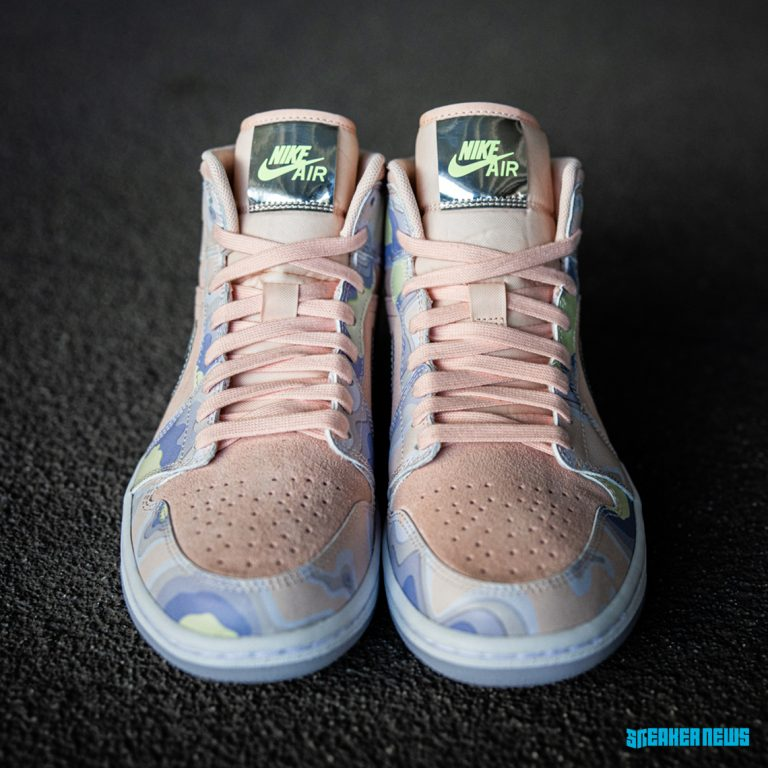

Ngày phát hành : 19/6
Giá bán lẻ tham khảo: 120 USD
Nếu là một người đam mê sneakers chắc chắn bạn đã từng nghe đến Foot locker – cửa hàng bán lẻ giày thể thao nổi tiếng tại Mỹ. Được thành lập vào năm 1974, Foot locker có trụ sở chính đặt tại Manhattan, New York và có chi nhánh tại hơn 20 quốc gia.
Thương hiệu bán lẻ này chuyên cung cấp các sản phẩm giày dép của nhiều thương hiệu khác nhau, trong đó không thể thiếu những nhãn hàng đình đám như Nike, adidas, Converse, Vans, Puma, Reebok, Timberland,…

Sắp tới nhà bán lẻ sneaker nổi tiếng tại Mỹ sẽ tiếp tục “hâm nóng” mối quan hệ hợp tác lâu dài với Nike/ Jordan Brand trong một phiên bản độc quyền Air Jordan 1 High Women “P(HER)SPECTIVE”.
Lấy chủ đề du hành không gian, đôi giày Air Jordan 1 mới được trang bị công nghệ Air cực kỳ tân tiến và phần toe box có những lỗ thông hơi cực kỳ thoáng khí. Phần upper kết hợp các tông màu pastel như xanh lam, xanh lá cây và hồng phù hợp cho phái nữ. Tông màu xanh neon nổi bật xuất hiện trên logo Wings và thương hiệu Nike Air trên lưỡi gà, tạo sự tương phản ấn tượng với chất liệu da lộn màu hồng của thân trên. Chi tiết dấu Swoosh màu bạc bóng bẩy là một điểm nhấn đắt giá cho toàn bộ phối màu. Và cuối cùng là phần đế icy đặc trưng của Air Jordan 1.
Quay lại
Mẫu giầy 1
.Mẫu giầy 2
.Mẫu giầy 4
.Mẫu giầy 5
.